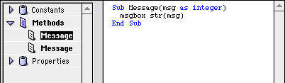

In general, if someone needs a type of control that isn't available, they go running to a plugin developer, or complain to Andrew (the author of RB). This is very, very baaaadddd...
What's the right thing to do? In general, any interface control can be rewritten as a subclass of the canvas! Already, people have made chart, table, listbox, tabpanel, painting, vector-editing, and HTML displaying subclasses of a canvas.
And as an added bonus, if you make it yourself, then you'll just feel better about it.
Yes, yes, you're probably saying "OverLOADING"? What is this guy talking about!? However, if you have one of the newer DR2 releases, you can create multiple versions of a method with the same name that take different parameters. For example, you could create a routine like this:
And then, make another routine like this:

Now, both Message "Hello" and Message 100 are valid statements. You can also make routines with different numbers of parameters that are in different orders, and that sort of thing too. Nifty, huh?